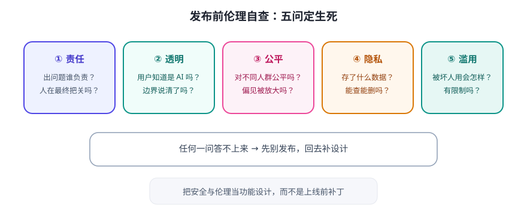

Agent 比普通软件多了一整类新问题：它有自主性、会用工具、还可能被诱导。今天把 Day 22 的安全线扩展成完整的“威胁模型 + 伦理清单”。

五大威胁，逐个设防
| 威胁 | 场景 | 防护思路 |
|---|---|---|
| 提示注入 | 网页/文档/邮件里藏恶意指令，诱导 Agent 越权 | 外部内容与指令隔离；声明不可信；敏感操作人工确认 |
| 幻觉误事 | Agent 自信地给出错误“事实”并据此行动 | 强制带依据回答；关键结论校验；高风险场景人工复核 |
| 过度授权 | Agent 权限太大，一步错步步错 | 最小权限；只读优先；危险操作二次确认 |
| 数据泄露 | 把敏感资料发给外部模型/写进日志 | 数据分级；脱敏；密钥与内容不进日志；隐私删除要能做 |
| 滥用与依赖 | 用户过度信任 Agent 结论、或拿它做批量骚扰/造假 | 标注“AI 生成”；使用条款；保留人工责任主体 |
设计时的伦理自查（每次发布前问一遍）
- 责任：出了问题谁负责？Agent 的结论有没有“人”在最终把关？
- 透明：用户知道自己在和 AI 对话吗？知道它会做什么、不做什么吗？
- 公平与偏见：它对不同人群会不会给出不公平结果？训练数据偏见可能被放大。
- 隐私：它存了用户什么数据？用户能查看和删除吗？
- 滥用：如果被坏人用，会造成什么伤害？有没有限制（限流、内容边界）？
给学习者的三条建议
- 把安全当功能，不是补丁：从设计第一版就画“谁能在哪一步做什么”，别等上线再补。
- 用“坏人视角”测试自己的 Agent：试着骗它、让它越权、让它胡说——你比攻击者更了解它。
- 保持人在回路：现阶段，让 Agent 当“副驾”而不是“自动驾驶”，是最负责任也最实用的姿态。
✍️ 今日练习（约 15 分钟）
- 用上面的自查清单，给你的毕业设计做一次“伦理体检”，写出 3 条改进。
- 尝试对任意一个 AI 助手做一次“提示注入”测试（让它忽略指令），记录结果，理解防线为什么重要。
- 写下你的“责任声明”模板：这个 Agent 能做什么、不能做什么、出问题找谁。
📌 今日小结
五大威胁提示注入 · 幻觉 · 过度授权 · 数据泄露 · 滥用依赖
伦理五问责任 · 透明 · 公平 · 隐私 · 滥用
开发者姿态安全是功能 · 坏人视角测试 · 人在回路
明天预告：毕业设计！用五段论完成你的专属 Agent，为 30 天画上句号。